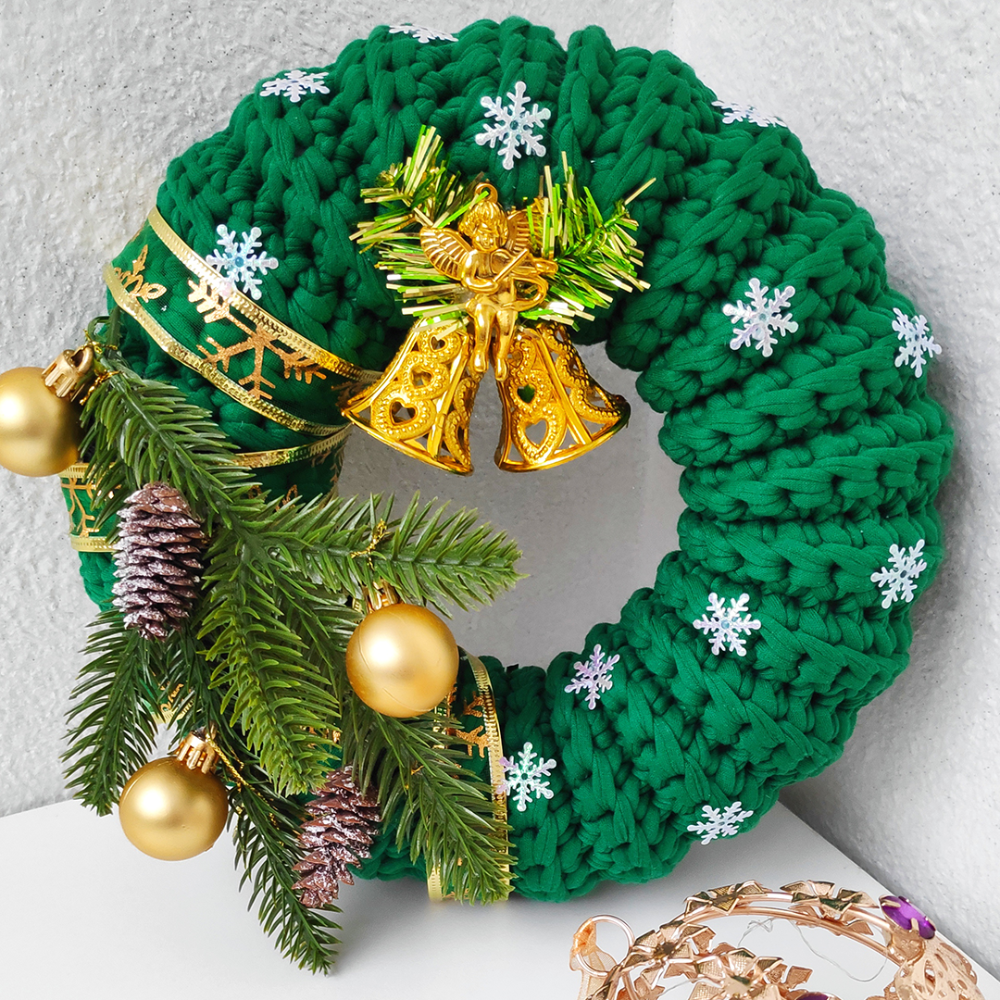

- Вязаные сумки
- Интерьерные корзины
- Ковры
- Лежанки для питомцев
- Ручная работа. Стильно, современно, практично, экологично.
Почему выбирают меня
Качество
Изделия отличаются плотностью вязки, отлично держат форму, не имеют швов и изъянов. Это кропотливая работа высокого класса.
Гипоаллергенность
Ипользую в работе только сертифицированные качественные материалы: первичная трикотажная пряжа турецкого производства с лицевой намоткой и полиэфирный шнур премиум качества с составом: 80% полиэфир, 20% кашмилон. Гипоаллергенны. Подходят даже маленьким деткам.
Индивидуальность
Затрудняетесь в выборе подходящего размера, оттенка, узора? Нужно создать изделие в кратчайшие сроки? Я с радостью помогу вам в решении любого вопроса, чтобы покупка вас радовала потом долгие годы.
Корзины
Сумки
Ковры

Новый год
Лежанки
Разное
Обо мне
Давайте знакомиться!
Меня зовут Аня, мне 35. Живу в Смоленске.
У меня есть муж, две дочки и кошка. Девочкам 5 лет и 3 года. Зовут Эмилия и Офелия. А кошка бенгальская.
Я вяжу интерьерные корзины, сумки, ковры, лежанки для питомцев и предметы декора. Это не основной род моей деятельности. Я работаю в сфере тестирования и обучаюсь на инженера по тестированию. Это то, чем я действительно горю. А потому усердно развиваюсь в данном направлении. Но также я очень люблю свое хобби и отношусь к нему с трепетом. Вязание для меня - это медитация, источник вдохновения и наполнения силами.
Вязание мне нравится с детства. Почти все школьные годы я провела с бабушкой в деревне. Именно она привила мне любовь к творчеству и вязанию в частности. Глядя на бабушку, я училась вязать спицами и крючком, вышивала и шила. А в декрете благодаря подруге, я узнала о существовании трикотажной пряжи. И что вязаные изделия могут быть не только чем-то винтажным, но и стать настоящим украшением и идеальным дополнением к соременному образу. А насколько преображается дом, когда на полу мягкий вязаный ковер, а на полочках функциональные корзины для хранения. Так и появилось KnittyKitty.
Я не стою на месте, постоянно учусь чему-то новому, осваиваю новые узоры и выдумываю новые модели сумочек. Я очень хочу, чтобы мои изделия радовали вас своей красотой и практичностью. А о качестве я позабочусь!